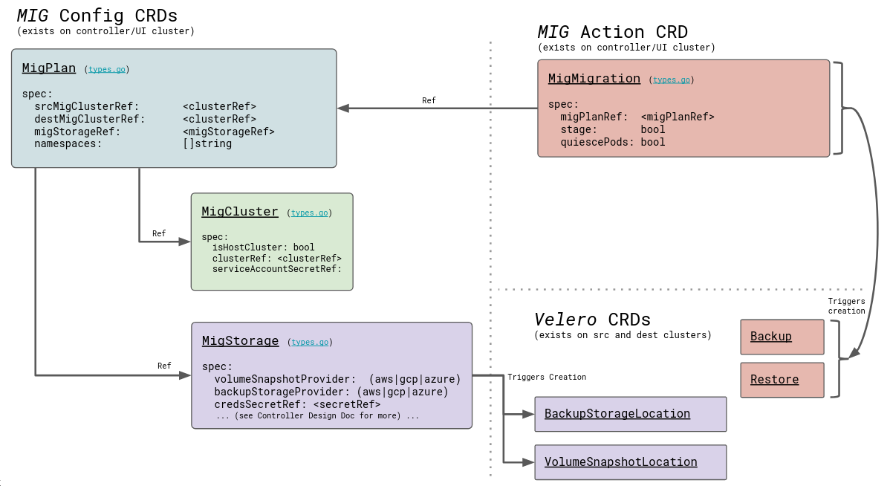
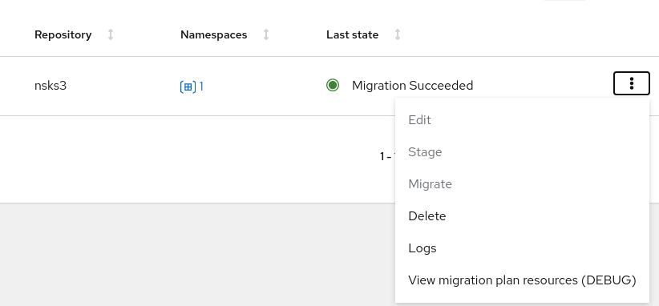
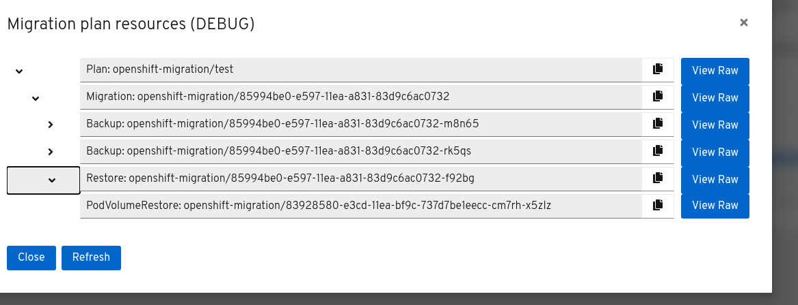

Troubleshooting
This section describes common troubleshooting procedures.
Upstream doc for improving debug experience
- https://github.com/konveyor/enhancements/tree/master/enhancements/debug
Debug flowchart (in progress)
MTC custom resources
The following diagram describes the MTC custom resources (CRs). Each object is a standard Kubernetes CR.
You can manage the MTC resources with the standard create, read, update, and delete operations using the kubectl and oc clients or directly, using the web interface.
TODO: Need to update diagram with MigAnalytic and MigHook

Debugging tips
You can view the resources of a migration plan in the MTC web console:
-
Click the Options menu beside a migration plan and select View migration plan resources.
The migration plan resources are displayed as a tree.
-
Click the arrow of a Backup or Restore object to view its pods.
-
Click the Copy button of a pod to copy the
oc getcommand to your clipboard.You can paste the command to the CLI to view the resource details.
-
Click View Raw to inspect a pod.
The resource is displayed in JSON format.


Typically, the objects that you are interested in depend on the stage at which the migration failed. The MTC debug flowchart provides information about what objects are relevant depending on this failure stage.
Stage migrations have one Backup and one Restore object.
Final migrations have two Backup and two Restore objects. The first Backup object captures the original, unaltered state of the application and its Kubernetes objects. This Backup is the source of truth. Then, the application is quiesced and a second Backup captures the storage-related resources (PVs, PVCs, data).
The first Restore restores these storage objects on the target cluster. The final Restore restores the original application Backup to the target cluster.
Querying the migration resources from the CLI
The migration debug tree can be viewed and traced by querying specific label selectors.
-
To view all
migmigrationobjects associated with thetestplan:$ oc get migmigration -l 'migration.openshift.io/migplan-name=test'Example output
NAME READY PLAN STAGE ITINERARY PHASE 09a8bf20-fdc5-11ea-a447-cb5249018d21 test false Final CompletedThe columns display the associated plan name, itinerary step, and phase.
-
To view
backupobjects:$ oc get backup -n openshift-migrationExample output
NAME AGE 88435fe0-c9f8-11e9-85e6-5d593ce65e10 6m42sUse the same command to view
restoreobjects. -
To inspect a
backupobject:$ oc describe backup 88435fe0-c9f8-11e9-85e6-5d593ce65e10 -n openshift-migration
See Viewing migration custom resources for more information.
Error messages
certificate error when logging in to the MTC console for the first time
The following error message might appear when you log in to the MTC console for the first time:
A certificate error has occurred, likely caused by using self-signed CA certificates in one of the clusters. Navigate to the following URL and accept the certificate:
`https://ocp-cluster.com:6443/.well-known/oauth-authorization-server`.
If an "Unauthorized" message appears after you have accepted the certificate, refresh the web page.
To fix this issue permanently, add the certificate to your web browser's trust store.
Possible causes are self-signed certificates or network access issues.
Self-signed CA certificates:
- You can navigate to the
oauth-authorization-serverURL and accept the certificate. - You can add self-signed certificates for the API server, OAuth server, and routes to your web browser's trusted store.
Network access:
- You can inspect the elements of the MTC console with your browser's web inspector to view the network connections.
-
MTC 1.3.1 and earlier: The MTC console performs OAuth authentication on the client side.
The console requires uninterrupted network access to the API server and the OAuth server.
-
MTC 1.3.2 and later: OAuth authentication is performed on the backend.
The console requires uninterrupted network access to the Node.js server, which provides the JavaScript bundle and performs OAuth authentication, and the API server. See BZ#1878824.
Connection has timed out message after accepting CA certificate
If you have accepted a self-signed certificate and a blank page appears, followed by a Connection has timed out message, the likely cause is a web proxy blocking access to the OAuth server.
Configure the web proxy configuration to allow access to the oauth-authorization-server URL. See BZ#1890675.
Using must-gather
You can use the must-gather tool to collect information for troubleshooting or for opening a customer support case on the Red Hat Customer Portal. The openshift-migration-must-gather-rhel8 image collects migration-specific logs and Custom Resource data that are not collected by the default must-gather image.
Run the must-gather command on your cluster:
$ oc adm must-gather --image=openshift-migration-must-gather-rhel8:v1.3.0
The must-gather tool generates a local directory that contains the collected data.
Direct volume migration fails to complete
If direct volume migration fails to complete, the most likely cause is that the Rsync transfer pods on the target cluster remain in a Pending state.
MTC migrates namespaces with all annotations in order to preserve security context constraints and scheduling requirements. During direct volume migration, MTC creates Rsync transfer pods on the target cluster in the namespaces that were migrated from the source cluster. If the target cluster does not have the same node labels as the source cluster, the Rsync transfer pods cannot be scheduled.
You can check the migmigration CR status:
$ oc describe migmigration 88435fe0-c9f8-11e9-85e6-5d593ce65e10 -n openshift-migration
The output displays the following status message:
Some or all transfer pods are not running for more than 10 mins on destination cluster
To resolve this issue, perform the following steps:
- Obtain the value of the
openshift.io/node-selectorannotation of the migrated namespaces on the source cluster:$ oc get namespace -o yaml - Add the
openshift.io/node-selectorannotation to each migrated namespace on the target cluster:apiVersion: v1 kind: Namespace metadata: annotations: openshift.io/node-selector: "region=east" ... - Re-run the migration plan.
Previewing metrics on local Prometheus server
You can use must-gather to create a metrics data directory dump from the last day:
$ oc adm must-gather --image quay.io/konveyor/must-gather:latest -- /usr/bin/gather_metrics_dump
You can view the data with a local Prometheus instance.
Performance metrics
For information about the metrics recorded by the MTC controller, see the mig-operator documentation.
This documentation includes useful queries for performance monitoring.
Cleaning up a failed migration
Deleting resources
Ensure that stage pods are cleaned up. If a migration fails during stage or copy, the stage pods are retained to allow debugging. Before retrying a migration, you must delete the stage pods manually.
Unquiescing an application
If your application was quiesced during migration, you should unquiesce it by scaling it back to its initial replica count.
This can be done manually by editing the deployment primitive (Deployment, DeploymentConfig, etc.) and setting the spec.replicas field back to its original, non-zero value:
$ oc edit deployment <deployment_name>
Alternatively, you can scale your deployment with the oc scale command:
$ oc scale deployment <deployment_name> --replicas=<desired_replicas>
Note on labels applied to help track what was migrated
While quiescing a source application, MTC annotates the original replica count on the deployment object for reference:
apiVersion: extensions/v1beta1
kind: Deployment
metadata:
annotations:
deployment.kubernetes.io/revision: "1"
migration.openshift.io/preQuiesceReplicas: "1"
Deleting the MTC Operator and resources
The following procedure removes the MTC Operator and cluster-scoped resources:
-
Delete the Migration Controller and its resources:
$ oc delete migrationcontroller <resource_name>Wait for the MTC Operator to finish deleting the resources.
-
Uninstall the MTC Operator:
- OpenShift 4: Uninstall the Operator in the web console or by running the following command:
$ oc delete ns openshift-migration- OpenShift 3: Uninstall the operator by deleting it:
$ oc delete -f operator.yml
-
Delete the cluster-scoped resources:
- Migration custom resource definition:
$ oc delete $(oc get crds -o name | grep 'migration.openshift.io') - Velero custom resource definition:
$ oc delete $(oc get crds -o name | grep 'velero') - Migration cluster role:
$ oc delete $(oc get clusterroles -o name | grep 'migration.openshift.io') - Migration-operator cluster role:
$ oc delete clusterrole migration-operator - Velero cluster role:
$ oc delete $(oc get clusterroles -o name | grep 'velero') - Migration cluster role bindings:
$ oc delete $(oc get clusterrolebindings -o name | grep 'migration.openshift.io') - Migration-operator cluster role bindings:
$ oc delete clusterrolebindings migration-operator - Velero cluster role bindings:
$ oc delete $(oc get clusterrolebindings -o name | grep 'velero')
- Migration custom resource definition: